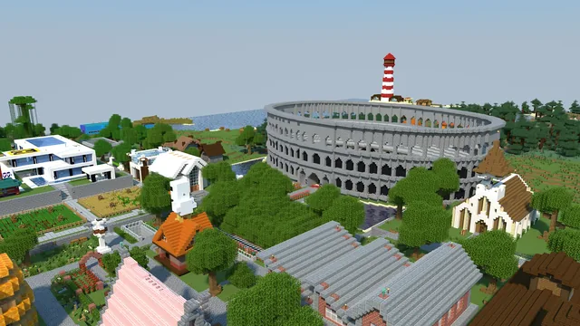
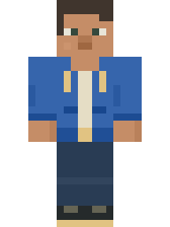

Exemplo
ExemploVVale dos Aliados
Java e BedrockSurvival

Crie servidores com o Manager, encontre onde jogar e reúna os amigos no Community.
Conta grátis. Manager incluído na assinatura.
Três produtos. Uma conta Força Aliada.
Crie e cuide do seu servidor.
Para Windows · incluído no ProEncontre onde jogar. Crie sua skin.
Explore grátisCompartilhe. Converse. Fique perto.
Participe grátisSeu perfil conecta os três. Pro e Team ampliam o que você pode fazer.
Interfaces demonstrativasForça Aliada Manager
Crie ou importe um servidor, compartilhe o endereço e cuide de tudo em um só aplicativo.
PC ligado e conectado. Windows 10/11 · 64 bits.
Incluído no Pro e Team. Não é hospedagem na nuvem.
Força Aliada Minecraft
Encontre um servidor por estilo de jogo, salve seus favoritos e leve sua própria skin.
Encontre seu próximo mundo.
Exemplo Exemplo
Exemplo
Exemplo Exemplo
ExemploServidores ilustrativos; fotos do nosso mundo. Explore o catálogo para ver as páginas publicadas.
Página básica grátis. Pro acrescenta capa ampliada e ícone em alta resolução.
Explorar servidores
Skins e editor
Escolha no catálogo, combine peças ou pinte direto no editor 3D.
Skins originais. Escolha, personalize e baixe.Força Aliada Community
Compartilhe suas criações, acompanhe os amigos e continue a conversa pelo chat integrado.
Seu perfil, com mais possibilidades.No Pro: selo, destaques e insights no Community.
Uma rua nova, feita em boa companhia.
Os detalhes fazem parte da história.

Feito com a Força Aliada
Nosso pequeno servidor é onde usamos nossas próprias ferramentas.
Conhecer nosso mundoManager, personalização da página do servidor e benefícios no Community. Escolha o espaço para sua equipe.
Conta gratuita. Sem cartão.
O uso do Manager requer Pro ou Team. O instalador não tem cobrança separada.
R$ 29,90 cobrados por mês.
R$ 79,90 cobrados por mês.
O Manager roda no seu PC, que precisa ficar ligado e conectado à internet. A assinatura não inclui hospedagem em nuvem.
Cancele a renovação quando precisar. Valores de referência. No anual: Pro R$ 299/ano e Team R$ 799/ano.
Preço, disponibilidade e condições são confirmados na contratação.
Não. Você pode explorar servidores, publicar uma página básica, usar skins e participar do Community com uma conta gratuita. O Manager e os benefícios avançados fazem parte do Pro e do Team.
Não. O Manager usa seu computador para hospedar o mundo. Ele precisa estar ligado e conectado à internet. O console permite administrar à distância, mas não substitui o computador que executa o servidor.
Sim. O Manager permite conectar um servidor existente, além de criar um novo. Faça uma cópia de segurança antes de mudar sua configuração e siga o guia de ativação.
Não para jogar no seu servidor. Pessoas convidadas para administrar podem participar conforme as permissões e o limite de equipe do seu plano. O jogo Minecraft não está incluído na assinatura.
O catálogo, o Community e o console abrem no navegador do celular. O aplicativo Manager é instalado no Windows, no computador que hospeda o servidor.
Na sua conta, em Assinatura e cobrança. Consulte as condições de cobrança e cancelamento apresentadas na contratação.


RuiGostei de como a praça ficou.